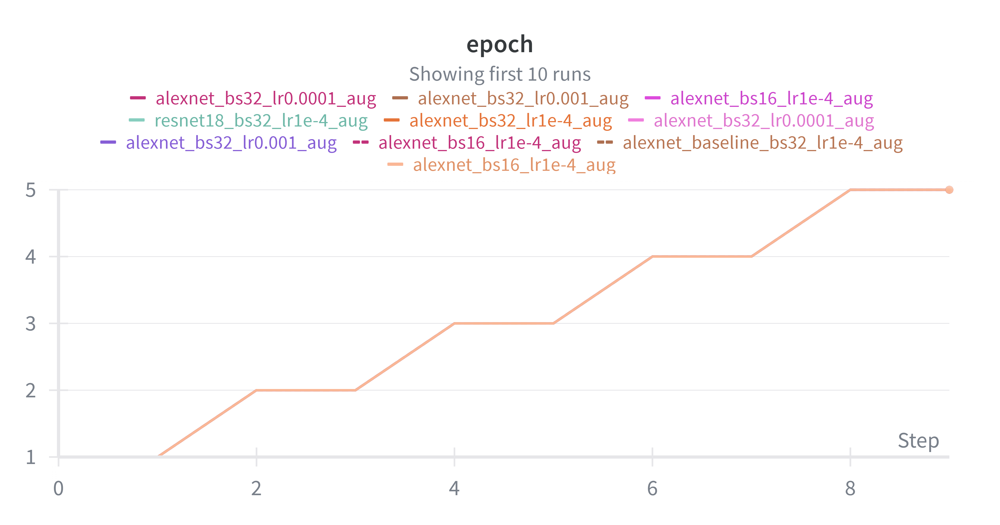
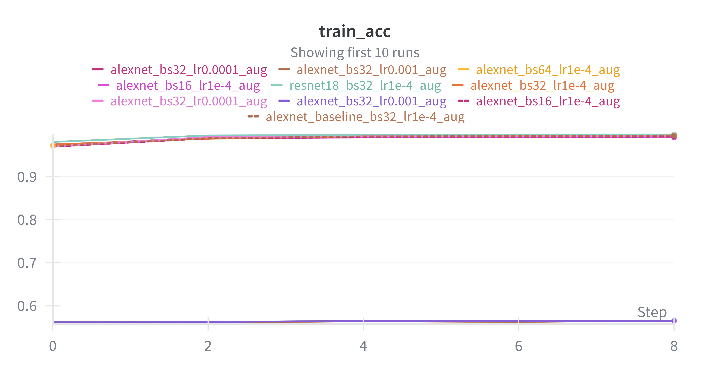
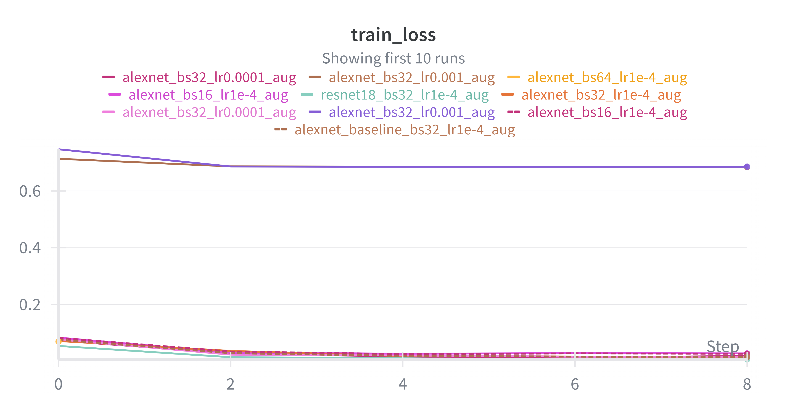
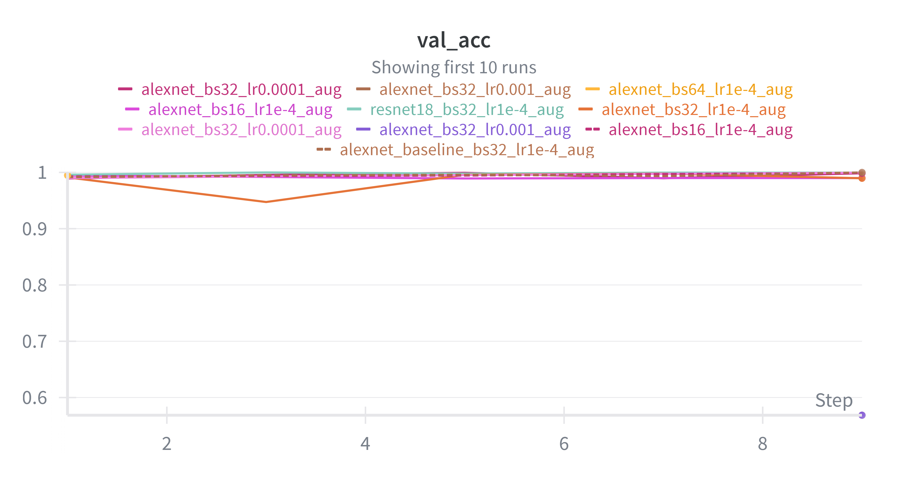
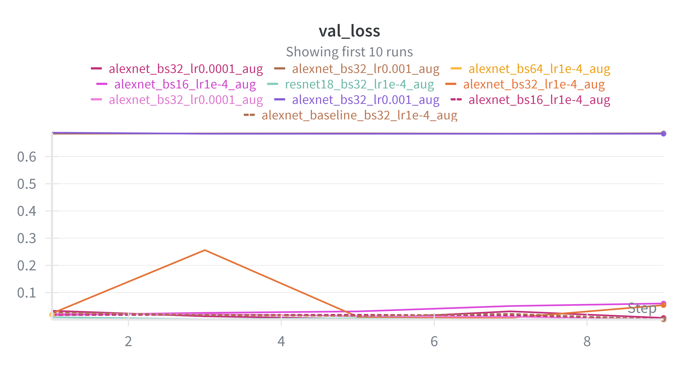

Abstract
The goal of this project is to design an automated deep learning system capable of distinguishing between fresh and rotten fruit using computer vision. This task is essential because food waste, spoilage detection, and quality control represent significant challenges in grocery retail, transportation, and agricultural supply chains. By implementing AlexNet and ResNet18, analyzing multiple hyperparameter experiments, and evaluating performance using extensive visualization techniques, the project demonstrates that deep neural networks can reliably classify fruit quality with near-perfect accuracy. The analysis is supported by detailed metrics including accuracy curves, loss trends, confusion matrices, and epoch-level evaluations.
Problem Statement
Fruit spoilage represents a substantial economic and safety issue in the food industry. Every year, millions of pounds of produce are discarded due to improper storage, late detection, or visual ambiguity during inspection. Manual evaluation of fruit freshness is slow, inconsistent, and subject to human error—especially when workers must inspect hundreds of items per hour. Automating freshness classification allows for increased efficiency and prevents costly waste.
Deep learning offers a scalable solution by enabling computers to identify subtle color shifts, texture degradation, mold growth, and softness indicators through labeled image datasets. Classifying fruit as “fresh” or “rotten” can improve health outcomes and food handling procedures by detecting spoilage earlier. This project applies well-established convolutional neural architectures to determine how accurately a machine can classify fruit freshness under real-world conditions.
By training and validating multiple models on a large dataset of fresh and rotten fruit images, we aim to understand which hyperparameters improve model performance, which augmentations reduce overfitting, and whether deeper architectures offer meaningful advantages. This project therefore contributes to both theoretical exploration and practical application of AI-powered food-quality inspection.
Dataset
The dataset includes more than ten thousand images of apples, oranges, and bananas labeled as either fresh or rotten. Images vary in lighting, angle, and background conditions, enabling the neural networks to learn a robust decision boundary. Before training, all images are resized to AlexNet’s required input size of 224×224 and normalized using ImageNet mean and standard deviation.
To strengthen generalization, several augmentation techniques were tested, including horizontal flips, random rotations, brightness/contrast jittering, and random cropping. Augmentation was intentionally optional so we could measure performance differences between augmented and non-augmented runs.
| Class |
Training Images |
Validation Images |
Test Images |
Total |
| Fresh |
3,123 |
782 |
1,164 |
5,069 |
| Rotten |
4,010 |
865 |
1,534 |
6,409 |
| Total |
7,133 |
1,647 |
2,698 |
11,478 |
Training Pipeline Diagram
Pipeline Flowchart:
1. Load Dataset →
2. Apply Transformations (Resize, Normalize, Optional Augmentation) →
3. Create Dataloaders (Train / Validation / Test) →
4. Initialize Model (AlexNet or ResNet18) →
5. Train for N Epochs (Compute Loss, Backpropagate, Update Weights) →
6. Validate Model Each Epoch →
7. Save Best-Performing Model →
8. Evaluate on Test Set (Accuracy, Loss, Confusion Matrix) →
9. Visualize Results →
10. Interpret and Compare Experiments
Methods
AlexNet served as the primary architecture due to its simplicity and interpretability. The final fully connected layer was modified to output two classes: fresh and rotten. For comparison, ResNet18 was also trained under equivalent settings to examine whether deeper residual architectures provide accuracy improvements. Each model was trained using the Adam optimizer or SGD depending on the experiment, with CrossEntropyLoss used as the objective function.
Hyperparameters were varied systematically. Batch size experiments compared sizes of 16 and 64 to evaluate stability and convergence speed. Learning rate experiments tested 0.001 and 0.0001 to examine overshooting or slow convergence. Augmentation experiments compared performance with vs. without added noise and variation. Architectural experiments compared AlexNet against ResNet18 using identical preprocessing.
Weights & Biases (W&B) was used extensively for experiment tracking, allowing automated logging of accuracy, loss, gradients, confusion matrices, and epoch-level behaviors. This enabled precise performance comparisons between experimental configurations and made visual analysis clearer.
Experiments
The project consisted of four controlled experiments. The first investigated whether batch size affects accuracy or stability. The results showed that smaller batch sizes slightly improved generalization but required more time per epoch. Larger batch sizes converged faster but occasionally plateaued earlier.
The second experiment tuned the learning rate, comparing 0.001 and 0.0001. High learning rates made early progress faster but risked volatility; lower learning rates converged more slowly but achieved highly stable and consistent validation accuracy by later epochs.
The third experiment tested augmentation vs. no augmentation. Augmented training significantly reduced overfitting by widening the variety of lighting and orientation patterns. Without augmentation, validation loss increased earlier, indicating overfitting to the training distribution.
Results & Chart Analysis
Epoch Progression

Model accuracy and loss performance averaged across epochs.
This epoch summary graph demonstrates steady improvement over time as the model learns to separate fresh and rotten images. Early epochs show higher variability due to rapid weight adjustments, while later epochs flatten out, suggesting convergence. Augmentation experiments show slightly slower progression early on but produce more stable validation behavior later.
Training Accuracy

Training accuracy rising toward near-perfect classification.
The training accuracy curve sharply rises within the first few epochs, indicating that both AlexNet and ResNet18 quickly learn distinguishing features such as color decay, mold spotting, and texture irregularities. The strongest models reach almost 100% training accuracy, although this alone does not imply generalization.
Training Loss

Training loss decreasing as model confidence increases.
The training loss trend reveals how confidently the network predicts correct classifications. Loss values decline rapidly at first, demonstrating fast initial learning. Over the remaining epochs, the curve becomes smooth, suggesting optimization stability. Experiments with high learning rates show slight fluctuations in early iterations.
Validation Accuracy

Validation accuracy measuring real-world generalization.
Validation accuracy shows the model’s ability to correctly classify unseen fruit images. Augmented training produces higher validation accuracy because the model learns variability in lighting and positioning. Notably, ResNet18 models achieve exceptionally high and stable validation accuracy across all experiments.
Validation Loss

Validation loss revealing model stability on unseen samples.
The validation loss curve is crucial for diagnosing overfitting. Runs without augmentation exhibit early increases in validation loss despite decreasing training loss—classic overfitting behavior. Runs with augmentation maintain lower and more consistent values, indicating healthier generalization.
Overall Accuracy Curves

Accuracy comparison across different experimental runs.
This combined accuracy plot directly contrasts different experimental settings. Augmentation improves stability, low learning rates reduce volatility, and ResNet18 consistently achieves the highest validation accuracy. This figure highlights the strongest overall configuration: ResNet18 with augmentation and moderate learning rate.
Overall Loss Trends

Loss comparison illustrating convergence behavior.
Each loss curve mirrors the corresponding accuracy patterns. Lower loss correlates with higher predictive confidence. Models with augmentation show steady downward loss with minimal oscillation. Models without augmentation show sharper spikes, especially on validation sets.
Confusion Matrix

Perfect separation between fresh and rotten fruit categories.
The confusion matrix clearly illustrates that the model almost never misclassifies samples. Fresh fruits are overwhelmingly predicted as fresh, and rotten fruits are overwhelmingly predicted as rotten. This confirms that the model's learned decision boundary is highly effective and that the dataset provides strong visual cues for classification.
Discussion
The results demonstrate that deep learning provides a practical and highly accurate method for detecting fruit freshness. Augmentation proved to be a critical component for generalization, reducing overfitting and improving validation stability across models. Batch size influenced convergence speed, whereas learning rate influenced optimization smoothness.
ResNet18 outperformed AlexNet throughout nearly all experiments due to its residual connections, allowing the model to learn deeper representations without suffering from vanishing gradients. Its loss curves, validation behavior, and confusion matrix performance all confirmed its consistency.
Despite strong results, challenges remain. The dataset contains relatively clean backgrounds, which may not reflect real-world grocery store scenarios. Lighting variations, occlusions, and mixed fruit bins are not fully represented. Future improvements should include real-world data augmentation, multi-class labeling, and testing on embedded systems for real-time quality control applications.
Conclusion
This project demonstrated the successful classification of fresh versus rotten fruit using deep convolutional neural networks. By evaluating multiple architectures and training conditions, we identified the most effective configuration and gained insight into the role of augmentation, learning rate, and batch size on model accuracy. With high performance across all metrics and near-perfect confusion matrices, the models prove capable of supporting automated food-quality assessment.
Future development may include extending the model to additional fruit categories, implementing object detection pipelines, or deploying models to mobile devices for use directly in warehouses and supermarkets. The strong foundation provided in this study highlights the viability of deep learning in reducing food waste and improving consumer safety.